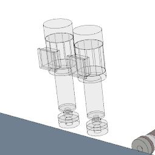
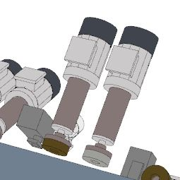
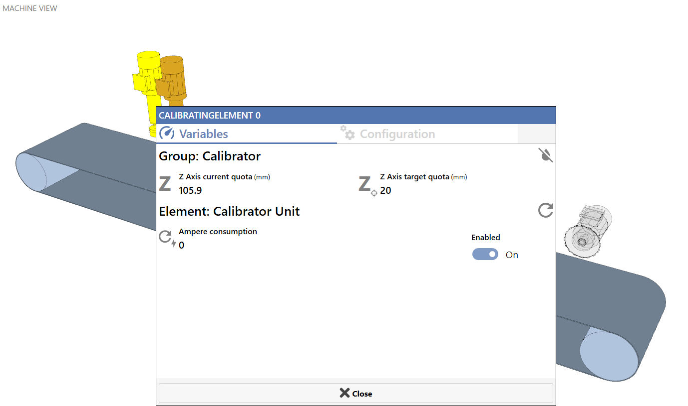
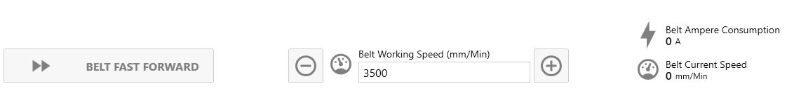
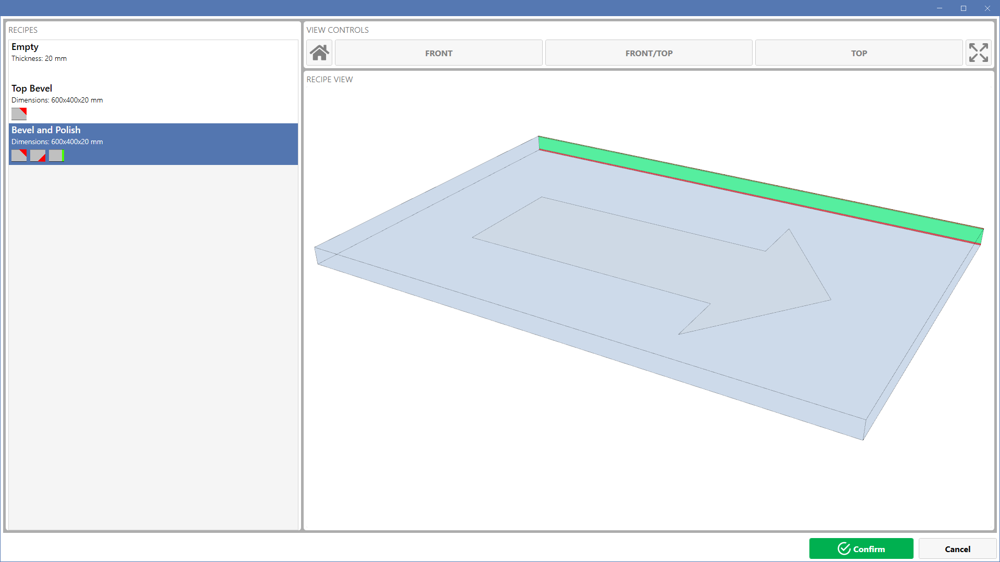

Die Seite „Home“ ist die Startseite der Software. Hier können Informationen angezeigt und der Maschinenzustand während der Bearbeitung überwacht werden.

Maschinenansicht
Der Hauptbereich dieser Seite zeigt ein dreidimensionales Modell der Maschine mit den zugehörigen Gruppen und Elementen, mit denen der Bediener interagieren kann.

Je nach dem in die Maschine geladenen Rezept werden die Elemente und Gruppen unterschiedlich dargestellt: farbig, wenn das aktuelle Rezept eine Bearbeitung vorsieht, für die sie benötigt werden, andernfalls transparent.
Inaktive Elemente | Aktive Elemente |
 |  |
Durch Drücken auf die dargestellten Elemente werden Popup-Fenster mit Daten zum entsprechenden Bauteil und zu seiner zugehörigen Arbeitsgruppe geöffnet.
In jedem dieser Fenster kann der Bediener Echtzeitdaten anzeigen und die Parameter der Gruppe und des Elements konfigurieren.

Steuerung der Maschinenansicht
In diesem Bereich kann die Maschinenansicht geändert werden.

 | Standardansicht |
 | Frontansicht |
Frontansicht von oben | |
 | Draufsicht |
 | Ansicht zurücksetzen |
Verwaltung der Werkstücke auf dem Förderband
In diesem Bereich kann der Bediener die Werkstücke in Bearbeitung überwachen und sie bei einer Störung gegebenenfalls entladen.

 | Werkstücke auf dem Förderband |
 | Alle löschen |
Daten und Steuerung des Förderbands
Im unteren Bereich unterhalb der Maschinenvorschau befinden sich Daten und Bedienelemente zur Steuerung des Förderbands.

 | Schnellvorschub des Förderbands |
 | Arbeitsgeschwindigkeit des Förderbands |
 | Arbeitsgeschwindigkeit des Förderbands verringern/erhöhen |
Stromaufnahme | |
 | Aktuelle Förderbandgeschwindigkeit |
Auftragsinformationen
In diesem Bereich werden die aktuell aktiven Auftragsinformationen in den 3 Feldern Kunde, Auftrag und Auftragsreihenfolge angezeigt.
Über die Bearbeitungstaste können die Informationen geändert werden; alternativ können sie über die entsprechende freigegebene .csv-Datei aus der Ferne geändert werden.
Nach der Änderung werden die neuen Informationen allen Werkstücken zugeordnet, die ab diesem Zeitpunkt eingelegt werden.

 | Kunde |
 | Auftrag |
 | Auftragsreihenfolge |
 | Angefordertes Rezept |
 | Auftragsdaten bearbeiten |
Informationen zum aktiven Rezept
In diesem Bereich werden die Informationen zum auf der Maschine aktiven Rezept angezeigt (Name, Abmessungen, besondere Merkmale, Bearbeitungsliste).

 | Name |
 | Vorgesehene Dicke |
 | Abmessungen |
 | Rezeptbearbeitungen |
 | Rezept bearbeiten |
Rezept auswählen | |
Rezept aktualisieren |
Auswahl des zu aktivierenden Rezepts
In diesem Fenster, das über die entsprechende Taste auf der Home-Seite aufgerufen werden kann, können Rezepte angezeigt und eines davon zum Laden in die Maschine ausgewählt werden.
Durch Anklicken eines Rezepts in der Liste wird dessen Vorschau angezeigt.
Die Bedienelemente für die Ansicht entsprechen denen der Hauptseite.
